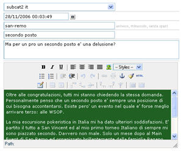

Field Classes
Rapyd Fields are a set of classes that can be used in DataForm
(and extended components DataEdit & DataFilter).
Basically each class is a single items of a form.
//spiagare stati e azioni status
Field list
- input
- password
- dropdown
- textarea
- checkbox
- datetime
- editor
- autoupdate
- submit, reset & button
- upload
- free
- container
- iframe
- colorpicker
- html
- captcha
- radio group
Fields Reference
$field = new xxxField($label, $fieldname);
string: $label (can be null) is a simple label.
string: $fieldname is the field name (if you use the object
to store/read from db, it must be the db field name).
Common Settings
| Property | Default Value | Options | Description |
|---|---|---|---|
| status | show | show,create,modify,hidden | field status |
| data | None | a dataobject | the way to bind field with database is to assign a dataobject needed to retrieve field value and perform actions (insert/update) |
| mode | None | readonly,autohide | the "mode" change field status in different situations: - readonly force field status to be even "show" - autohide force field status to be "show" when it is "modify" |
| when | None | array | limit field output to the passed array of status. example: if you pass array("show","create") the "modify" status will not show the field |
| rule | None | string | CI validation rules/callback delimited by | (pipe) |
| insertValue | None | mixed | the default value, when field status is "create" (new record) |
| updateValue | None | mixed | the default value, when field status is "modify" (current
record) note: when field is binded to a database it override current field value |
| group | None | string | used only in conjunction with DataForm and extended
components, the "group" is a string (the label of the group) used to group similar fields |
| in | None | string | used only in conjunction with DataForm and extended
components, the "in" property can be used to declare the field as child of another, so the output will be built inside another field. You must pass the "instance" name |
| size | 45 | numeric | size of a input/text based field (inputField, passwordField, dateField,...) |
| cols | 42 | numeric | number of cols in a textarea based field (textareaField, editorField, htmlField) |
| rows | 15 | numeric | number of rows in a textarea based field (textareaField, editorField, htmlField) |
| delete_file | true | boolean | applicable to "uploadField". If true the file unlink will be executed. |
Common Methods
$field->append($extra_text)
string: $extra_text append and extra text to the field output
0.9.8 extended Feature:
$field->options($options,$data_conn=null)
mixed: $options populate options (of a field with
multiple values like a dropdown) by given array or sql query.
- array sample: array($value1=>$description1, $value2=>$description2,
..)
- query sample: "SELECT category_id, name FROM categories"
string (optional):$data_conn allow us to retreive data from
an other connection group than the Rapyd default one.If you don't use
this argument the options list is retreived from the Rapyd current
connection group.
Imporant: Like in other Rapyd database stuff, options() method use an independent AR than the CI default one, but it not use the Rapyd common AR $this->rapyd->db . See the Data Source Concept in the General Concepts page to understand $data_conn argument.
$field->option($value,$description)
append a option (on a field with multiple values like a dropdown)
mixed: $value option value .
string: $description option description .
$field->build()
build field, exec queries if needed, and fill $field->output html result
Samples
inputField
An simple form input.
In this sample, a dataobject is used to bind field with an article
(id=1) from "articles" table.
It seems complex but, you will use fields in forms
(DataForm/DataFilter/DataEdit classes). So, see fields sintax/samples
there.
Nexts samples are provided without many of needed properties/methods
(status,data,build..), and each field is instanced as a "form" property.
passwordField
An Input, where type = password, with possibility to encrypt
data, hide value in view state, and empty value in modify state.
contributed by Nick Crossland.
dropdownField
A Select.
textareaField
A Textarea.
checkboxField
A Checkbox.
extra params ("y","n") are:
mixed: $checked_value value assumed if field is checked
(viceversa, the value needed into db to display it checked).
mixed: $unchecked_value value assumed if is field is checked.
dateField
A Date-Picker DHTML calendar based on jscalendar (rapyd 3th party
library).
third params is a php date format.
You can replace the default format changing the const RAPYD_DATE_FORMAT
in rapyd/language/{your_language}.php
you can use a valid php date format, or ICU short date code:
'eu' => 'd/m/Y', back compatibility (non standard ICU, and so deprecated) 'us' => 'n/j/y', back compatibility (non standard ICU, and so deprecated) 'en_US' => 'n/j/y', 'en_GB' => 'd/m/Y', 'it_IT' => 'd/m/y', 'it_CH' => 'd.m.y', 'fr_FR' => 'd/m/y', 'fr_CH' => 'd.m.y', 'fr_BE' => 'j/m/y', 'de_DE' => 'd.m.y', 'sk_SK' => 'j.n.Y', 'pl_PL' => 'y-m-d', 'hu_HU' => 'Y.m.d.', 'sv_SE' => 'Y-m-d' ).
Important: insertValue and updateValue must be passed in iso/db format like the sample.
editorField
A wysiwyg DHTML editor (like a small Word application), derived
from TinyMCE, and TinyFCK
NEW: from the 0.9.8 version, the editor field allow us
to set the file path of the added images.
When you edit your content with the tinyMCE of the editorField you can
link images that will be uploaded on your server, with the previous
version of Rapyd the file path of the uploaded image was fixed to DOCUMENT_ROOT/uploads/images/image,
from the 0.9.8 version the default path is DOCUMENT_ROOT/uploads/image
and you can change this default path with the new editorField property
as follow.
In this case the uploaded image will be in DOCUMENT_ROOT/my_upload/some_content/image
directory.
Notes:
1- The tinyMCE editor (used by the editorField) always add a subfolder
into the path set by the property, this subfolder name depend on the
file type; here '/image' (we can't change this
subfolder name). So if you want to upload your images into the
DOCUMENT_ROOT/my_upload/image you have to set the editor upload_path
property to /my_upload/.
2- If you update an old rapyd version with the 0.9.8 or higher, and keep
your uploaded images in the old default path you should manually set the
upload_path to /uploads/images/ for that the
next uploaded images will be put into the DOCUMENT_ROOT/uploads/images/image
directory (the old default path) or to move your images into the new
default path: DOCUMENT_ROOT/uploads/image.
autoUpdateField
Not properly a hidden field, it can store & update passed
values
In the sample it is used to store (widhout output) a datetime, "last
record update"
Note: it's a field without output and params are:
string: $fieldname
mixed: $insert_value
mixed: $update_value
resetField, submitField & buttonField
Buttons, to exec actions.
Note: components like DataEdit and DataFilter have custom way/methods to build buttons
uploadField
A Input (file type), to upload files. It is based upon CI Upload
library.
In the sample, the "thumb" property is used to make a resized thumbnail
(max 63x91 pixels), using CI image_lib (image manipulation class)
Note: you can pass as parameter all additionals configs of CI Upload class
Important: This field do not store the file as blob field, it save file in the passed "upload_path" and store the filename into db
freeField
A empty field, it can display a passed html string, basic scope is to enable, inside forms (DataForm/DataEdit) a custom area to display complex/custom fields.
containerField
A div, it can contain a passed html string, basic scope is to enable, inside forms (DataForm/DataEdit) a custom area to display messages, custom and static fields.. etc.
iframeField
An iframe, basic scope is to enable master-detail editing.
colorpickerField
A Color-Picker DHTML, based on colorpicker (rapyd 3th party library).
htmlField
Same of Textarea but in "show" status it has a better output layout, and in "create/modify" status a smaller font.
captchaField
build a captcha image and a input text (prevent form submission
by bots/scripts).
Notes: this field always add "required" and the validation is
autochecked by rapyd.
(so you don't have to specify: $form->captcha->rules=
"required|callback...";)
radiogroupField
a simple group of radio inputs.
like dropdownField, options() can be used to populate values.